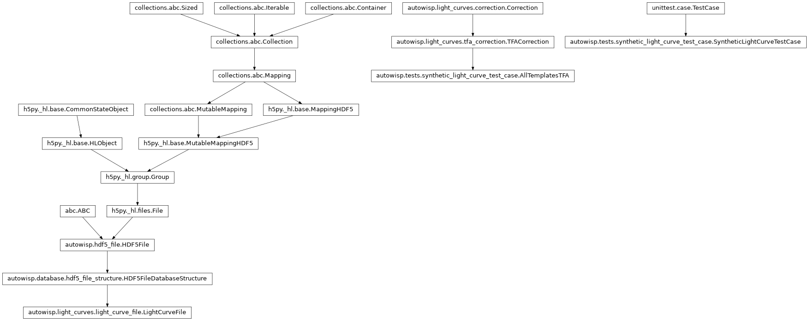
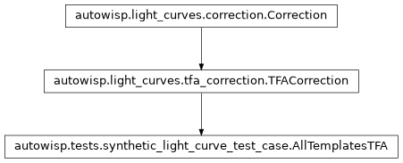

autowisp.tests.synthetic_light_curve_test_case module
Class Inheritance Diagram

Define a base class for tests on lightcurves built to a known answer.
- class autowisp.tests.synthetic_light_curve_test_case.AllTemplatesTFA(epd_statistics, configuration, verify_template_data=False, **iterative_fit_config)[source]
Bases:
TFACorrection
A
TFACorrectionusing every star in the statistics as template.Template selection has its own tests; here it would only obscure which stars the fit uses.
- class autowisp.tests.synthetic_light_curve_test_case.SyntheticLightCurveTestCase(methodName='runTest')[source]
Bases:
TestCaseTests on two-channel lightcurves created in a throwaway project.
Self-contained (no downloaded test-data bundle): the bundle has a single channel, and its lightcurves follow no model a result could be checked against. Here both channels of a frame share its frame number, so only the channel tells their points apart.
- classmethod _get_lc_fname(source_id)[source]
Return the filename of the lightcurve of the given source.
- static _get_template_statistics(num_templates)[source]
Return EPD statistics listing sources 1 to
num_templates.
- classmethod _get_tfa_configuration(**overrides)[source]
Return the step’s default configuration, as
tfa()adapts it.
- classmethod _write_light_curve(source_id, magnitudes, points=slice(None, None, None), extra_datasets=None)[source]
Create the lightcurve of one source with the given points.
- Parameters:
source_id (int) – Identifies the source and names its lightcurve.
magnitudes (array) – The brightness of the source at every channel of every frame, relative to a constant.
points (slice or bool array) – The points the lightcurve has.
extra_datasets (dict or None) – Further datasets to create, with their values at every channel of every frame indexed by pipeline key.